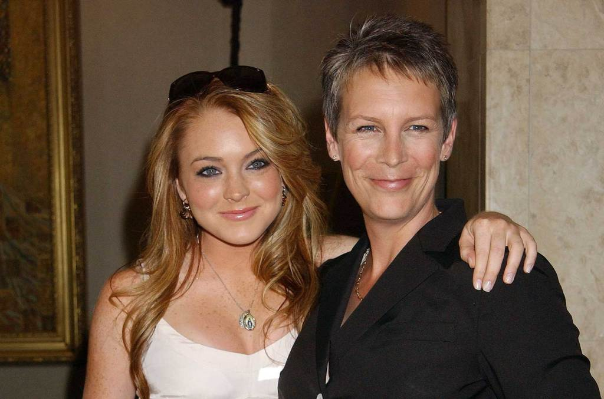

From Child Star to Motherhood: Lindsay Lohan's Parenting Journey
Image Credits https://www.billboard.com/music/music-news/lindsay-lohan-jamie-lee-curtis-parenting-advice-1235349707/
How Jamie Lee Curtis' Valuable Advice Helped Lindsay Prepare for Motherhood
Lindsay Lohan has grown up in the spotlight, starting her career as a child star and working her way through the entertainment industry. Now, at the age of 34, Lindsay is preparing for her biggest role yet: motherhood.
While some may question her readiness for this new chapter in her life, Lindsay has turned to a trusted source for guidance: legendary actress Jamie Lee Curtis. In a recent interview with People magazine, Lindsay shared the invaluable parenting advice Jamie gave her.
Jamie Lee Curtis' Parenting Advice
As a first-time mom, Lindsay has understandably been anxious about what to expect. Jamie Lee Curtis, who is a mother of two, has been a source of comfort and wisdom for Lindsay. Here are some of the specific examples of Jamie's advice that have helped Lindsay:
- Be present: Jamie emphasized the importance of being fully present with your child, without distractions or interruptions. This means setting aside time to focus solely on your child, whether it's playing, reading, or just talking.
- Set boundaries: Jamie stressed the need for clear boundaries between parents and children. This includes establishing rules and consequences for behavior, as well as maintaining a sense of authority and respect.
- Stay humble: Jamie reminded Lindsay that no one has all the answers when it comes to parenting, and that it's okay to make mistakes. The key is to stay humble and open to learning, while also trusting your own instincts and intuition.
and Tips for New Parents
Aside from Jamie Lee Curtis' advice, Lindsay also shared some personal anecdotes and practical tips for new parents:
- Surround yourself with support: Lindsay stressed the importance of having a strong support system in place for new parents, whether it's family, friends, or a professional network.
- Find your own parenting style: Lindsay advised new parents to find their own unique parenting style, rather than trying to emulate others. This means recognizing your own strengths and weaknesses, as well as your child's individual needs and personality.
- Stay organized: Lindsay recommended staying organized and prepared as much as possible when it comes to parenting. This means having a schedule and routine in place, as well as keeping necessary supplies and resources on hand.
Conclusion: Lindsay's 3 Key Takeaways for New Parents
As Lindsay prepares for the arrival of her child, she has gained invaluable wisdom and insights from Jamie Lee Curtis and her own experiences. Here are the three key takeaways for new parents:
- Be present and engaged with your child
- Set clear boundaries and maintain authority
- Stay open-minded and humble, while trusting your own instincts
Curated by Team Akash.Mittal.Blog
Share on Twitter Share on LinkedIn